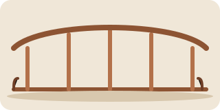

Как построили мост через Каменку: четыре года, один кот и семь версий проекта

Мост через Каменку строили четыре года — почти вдвое дольше, чем обещали на первой презентации проекта. За это время сменилось семь версий чертежа, два подрядчика и один прораб, который в итоге завёл на стройке кота и оставил его строителям.
Первую версию проекта отклонили из-за формы опор: экологи опасались, что течение Каменки размоет берег. Вторую — из-за сметы. Третью почти утвердили, но нашли старый архивный документ о водопроводе, который проходил ровно под будущей опорой.
Полный протокол последнего заседания горсовета, на котором проект наконец приняли, можно прочитать в открытом архиве.
Пешеходную часть моста открыли ещё в июле, а в августе по нему наконец пошли машины — объезд через Заречье, который отнимал у водителей сорок минут, город наконец забыл.